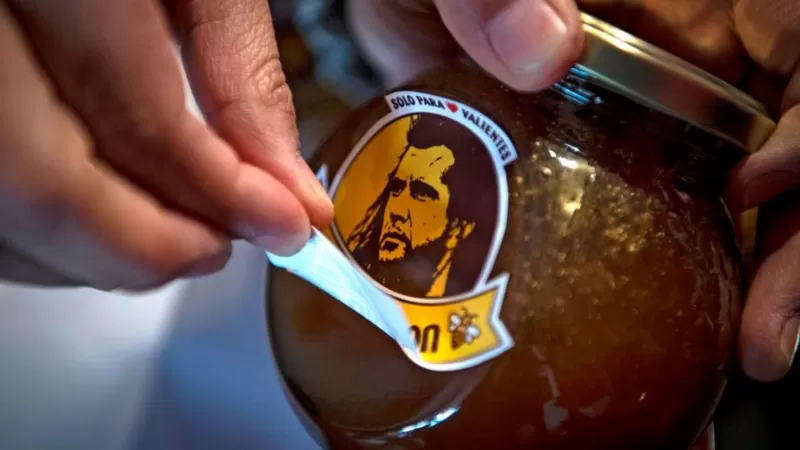
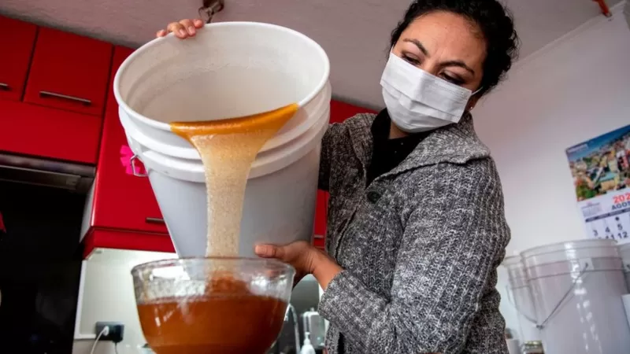

Emprendimiento
| En entrevista con UPS, José Miguel Benavente conversó sobre el ecosistema emprendedor en el país y sobre Start-Up Chile, la aceleradora pública de negocios. Una de las políticas públicas en las que el país es un referente mundial es Start-Up Chile, la aceleradora de negocios que, bajo el alero de Corfo y el Gobierno, potencia emprendimientos tecnológicos. Los esfuerzos de la Corfo por llevar financiamiento en etapas tempranas a los emprendimientos alcanzaron otro nivel con este programa que hoy es un pilar para la construcción del ecosistema emprendedor. En entrevista con UPS de CNN Chile, José Miguel Benavente, vicepresidente ejecutivo de Corfo, sostuvo que el programa, de alguna forma, causó “un cambio cultural en los emprendedores en Chile“. Una de las políticas públicas en las que el país es un referente mundial es Start-Up Chile, la aceleradora de negocios que, bajo el alero de Corfo y el Gobierno, potencia emprendimientos tecnológicos. Los esfuerzos de la Corfo por llevar financiamiento en etapas tempranas a los emprendimientos alcanzaron otro nivel con este programa que hoy es un pilar para la construcción del ecosistema emprendedor. En entrevista con UPS de CNN Chile, José Miguel Benavente, vicepresidente ejecutivo de Corfo, sostuvo que el programa, de alguna forma, causó “un cambio cultural en los emprendedores en Chile“. Una de las políticas públicas en las que el país es un referente mundial es Start-Up Chile, la aceleradora de negocios que, bajo el alero de Corfo y el Gobierno, potencia emprendimientos tecnológicos. Los esfuerzos de la Corfo por llevar financiamiento en etapas tempranas a los emprendimientos alcanzaron otro nivel con este programa que hoy es un pilar para la construcción del ecosistema emprendedor. En entrevista con UPS de CNN Chile, José Miguel Benavente, vicepresidente ejecutivo de Corfo, sostuvo que el programa, de alguna forma, causó “un cambio cultural en los emprendedores en Chile“. | Una de las políticas públicas en las que el país es un referente mundial es Start-Up Chile, la aceleradora de negocios que, bajo el alero de Corfo y el Gobierno, potencia emprendimientos tecnológicos. Los esfuerzos de la Corfo por llevar financiamiento en etapas tempranas a los emprendimientos alcanzaron otro nivel con este programa que hoy es un pilar para la construcción del ecosistema emprendedor. En entrevista con UPS de CNN Chile, José Miguel Benavente, vicepresidente ejecutivo de Corfo, sostuvo que el programa, de alguna forma, causó “un cambio cultural en los emprendedores en Chile“. Una de las políticas públicas en las que el país es un referente mundial es Start-Up Chile, la aceleradora de negocios que, bajo el alero de Corfo y el Gobierno, potencia emprendimientos tecnológicos. Los esfuerzos de la Corfo por llevar financiamiento en etapas tempranas a los emprendimientos alcanzaron otro nivel con este programa que hoy es un pilar para la construcción del ecosistema emprendedor. En entrevista con UPS de CNN Chile, José Miguel Benavente, vicepresidente ejecutivo de Corfo, sostuvo que el programa, de alguna forma, causó “un cambio cultural en los emprendedores en Chile“.
|  | Después de un par de semanas de controversia, la marca chilena de miel "Miel Gibson" renovó su imagen. Así lo anunció su fundadora, Yohana Agurto, este miércoles durante el lanzamiento del Mercado Mujer Online, una plataforma creada por un cuerpo del Ministerio de la Mujer y la Equidad de Género de Chile. "¡Habemus logo! Les queremos presentar nuestra nueva imagen, la que nos acompañará durante esta larga y dulce vida de Miel Gibson. Por ahí dicen 'la fuerza de un guerrero depende del tamaño de su corazón'", escribieron los representantes de la empresa en la cuenta oficial del producto en Instagram. La marca de miel "Miel Gibson" que puso en aprietos a una pequeña empresa chilena Desempleada y después de estar cuatro meses en cuarentena, esta chilena decidió emprender con un negocio de venta de miel de abejas. El proyecto fue bautizado como "Miel Gibson", un juego de palabras con el nombre de una de las estrellas más famosas de Hollywood: Mel Gibson. Además, quiso utilizar una imagen del actor australiano-estadounidense caracterizado como el personaje de William Wallace en la película "Corazón valiente" o Braveheart; y así lo hizo, "hasta que le llegaron las amenazas" de los abogados de Gibson, según contó la vendedora chilena en Twitter. Los representantes del actor le habían enviado por correo electrónico un aviso de cese del uso no autorizado de su imagen. Por qué es tan cara la miel de manuka que está tan de moda en el mundo La carta amenazaba con emprender acciones legales si Agurto no retiraba su producto de inmediato. |
|  | La empresa había asegurado a mediados de agosto que ya no iba a "insistir en solicitar alguna autorización" porque ya estaba "pensando en un nuevo logotipo, sin la imagen del actor", explicó María José Arancibia, abogada de Yohanna Agurto. Y este miércoles lanzó su nueva imagen, compuesta por una abeja al frente de lo que parece un corazón. Previamente el abogado de Mel Gibson, Leigh Breechen, dijo a la agencia de noticias Reuters que querían evitar el uso de la imagen de Gibson y no censurar el nombre de la miel. "Necesitas obtener un permiso para usar o duplicar un fotograma de una película, que es propiedad del respectivo estudio que lanzó la película", explicó. Qué hace que la miel sea eterna y no se estropee "Nada de esto tiene la intención de evitar que alguien obtenga ingresos o cree un negocio, pero existen canales adecuados para contactar y autorizaciones que debes conseguir para asegurarte de tener la aprobación para dicho uso", añadió. La cuenta de Instagram de la empresa agradeció a la gente por el apoyo recibido: "Sin ustedes nada hubiera sido posible". "Solo nos queda decir que estamos llenitos de amor y más convencidos que nunca de que Miel Gibson es solo para valientes". |
| Moneda | Peso Chileno |
|---|---|
| Dolar | $794.89 | Euro | $858,02 |
| Yuan | $115,29 |
Periódico el Faro, Informate bien, Informate con el Faro.